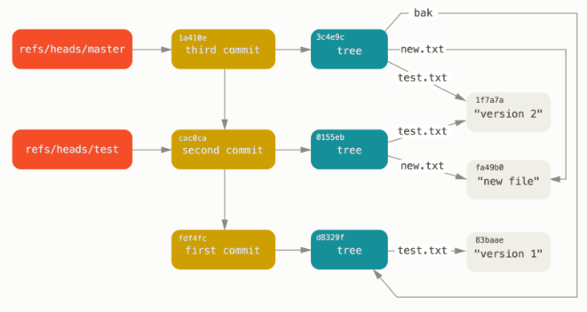

Git ref packfiles
Git References
You can run something like git log 1a410e to look through your whole history, but you still have to remember that 1a410e is the last commit in order to walk that history to find all those objects. You need a file in which you can store the SHA-1 value under a simple name so you can use that pointer rather than the raw SHA-1 value.
In Git, these are called “references” or “refs”; you can find the files that contain the SHA-1 values in the .git/refs directory. In the current project, this directory contains no files, but it does contain a simple structure:
$ find .git/refs
.git/refs
.git/refs/heads
.git/refs/tags
$ find .git/refs -type f
To create a new reference that will help you remember where your latest commit is, you can technically do something as simple as this:
$ echo "1a410efbd13591db07496601ebc7a059dd55cfe9" > .git/refs/heads/master
Now, you can use the head reference you just created instead of the SHA-1 value in your Git commands:
$ git log --pretty=oneline master
1a410efbd13591db07496601ebc7a059dd55cfe9 third commit
cac0cab538b970a37ea1e769cbbde608743bc96d second commit
fdf4fc3344e67ab068f836878b6c4951e3b15f3d first commit
You aren’t encouraged to directly edit the reference files. Git provides a safer command to do this if you want to update a reference called update-ref:
$ git update-ref refs/heads/master 1a410efbd13591db07496601ebc7a059dd55cfe9
That’s basically what a branch in Git is: a simple pointer or reference to the head of a line of work. To create a branch back at the second commit, you can do this:
$ git update-ref refs/heads/test cac0ca
Your branch will contain only work from that commit down:
$ git log --pretty=oneline test
cac0cab538b970a37ea1e769cbbde608743bc96d second commit
fdf4fc3344e67ab068f836878b6c4951e3b15f3d first commit
Now, your Git database conceptually looks something like this:

When you run commands like git branch (branchname), Git basically runs that update-ref command to add the SHA-1 of the last commit of the branch you’re on into whatever new reference you want to create.
The HEAD
The question now is, when you run git branch (branchname), how does Git know the SHA-1 of the last commit? The answer is the HEAD file.
The HEAD file is a symbolic reference to the branch you’re currently on. By symbolic reference, we mean that unlike a normal reference, it doesn’t generally contain a SHA-1 value but rather a pointer to another reference. If you look at the file, you’ll normally see something like this:
$ cat .git/HEAD
ref: refs/heads/master
If you run git checkout test, Git updates the file to look like this:
$ cat .git/HEAD
ref: refs/heads/test
When you run git commit, it creates the commit object, specifying the parent of that commit object to be whatever SHA-1 value the reference in HEAD points to.
You can also manually edit this file, but again a safer command exists to do so: symbolic-ref. You can read the value of your HEAD via this command:
$ git symbolic-ref HEAD
refs/heads/master
You can also set the value of HEAD:
$ git symbolic-ref HEAD refs/heads/test
$ cat .git/HEAD
ref: refs/heads/test
You can’t set a symbolic reference outside of the refs style:
$ git symbolic-ref HEAD test
fatal: Refusing to point HEAD outside of refs/
Tags
We just finished discussing Git’s three main object types, but there is a fourth. The tag object is very much like a commit object – it contains a tagger, a date, a message, and a pointer. The main difference is that a tag object generally points to a commit rather than a tree. It’s like a branch reference, but it never moves – it always points to the same commit but gives it a friendlier name.
As discussed in Git 基礎, there are two types of tags: annotated and lightweight. You can make a lightweight tag by running something like this:
$ git update-ref refs/tags/v1.0 cac0cab538b970a37ea1e769cbbde608743bc96d
Notice that the object entry points to the commit SHA-1 value that you tagged. Also notice that it doesn’t need to point to a commit; you can tag any Git object.
Remotes
The third type of reference that you’ll see is a remote reference. If you add a remote and push to it, Git stores the value you last pushed to that remote for each branch in the refs/remotes directory. For instance, you can add a remote called origin and push your master branch to it:
$ git remote add origin git@github.com:schacon/simplegit-progit.git
$ git push origin master
Counting objects: 11, done.
Compressing objects: 100% (5/5), done.
Writing objects: 100% (7/7), 716 bytes, done.
Total 7 (delta 2), reused 4 (delta 1)
To git@github.com:schacon/simplegit-progit.git
a11bef0..ca82a6d master -> master
Then, you can see what the master branch on the origin remote was the last time you communicated with the server, by checking the refs/remotes/origin/master file:
$ cat .git/refs/remotes/origin/master
ca82a6dff817ec66f44342007202690a93763949
Remote references differ from branches (refs/heads references) mainly in that they’re considered read-only. You can git checkout to one, but Git won’t point HEAD at one, so you’ll never update it with a commit command. Git manages them as bookmarks to the last known state of where those branches were on those servers.
Packfiles
Let’s go back to the objects database for your test Git repository. At this point, you have 11 objects – 4 blobs, 3 trees, 3 commits, and 1 tag:
$ find .git/objects -type f
.git/objects/01/55eb4229851634a0f03eb265b69f5a2d56f341 # tree 2
.git/objects/1a/410efbd13591db07496601ebc7a059dd55cfe9 # commit 3
.git/objects/1f/7a7a472abf3dd9643fd615f6da379c4acb3e3a # test.txt v2
.git/objects/3c/4e9cd789d88d8d89c1073707c3585e41b0e614 # tree 3
.git/objects/83/baae61804e65cc73a7201a7252750c76066a30 # test.txt v1
.git/objects/95/85191f37f7b0fb9444f35a9bf50de191beadc2 # tag
.git/objects/ca/c0cab538b970a37ea1e769cbbde608743bc96d # commit 2
.git/objects/d6/70460b4b4aece5915caf5c68d12f560a9fe3e4 # 'test content'
.git/objects/d8/329fc1cc938780ffdd9f94e0d364e0ea74f579 # tree 1
.git/objects/fa/49b077972391ad58037050f2a75f74e3671e92 # new.txt
.git/objects/fd/f4fc3344e67ab068f836878b6c4951e3b15f3d # commit 1
Git compresses the contents of these files with zlib, and you’re not storing much, so all these files collectively take up only 925 bytes. You’ll add some larger content to the repository to demonstrate an interesting feature of Git. To demonstrate, we’ll add the repo.rb file from the Grit library – this is about a 22K source code file:
$ curl https://raw.githubusercontent.com/mojombo/grit/master/lib/grit/repo.rb > repo.rb
$ git checkout master
$ git add repo.rb
$ git commit -m 'added repo.rb'
[master 484a592] added repo.rb
3 files changed, 709 insertions(+), 2 deletions(-)
delete mode 100644 bak/test.txt
create mode 100644 repo.rb
rewrite test.txt (100%)
If you look at the resulting tree, you can see the SHA-1 value your repo.rb file got for the blob object:
$ git cat-file -p master^{tree}
100644 blob fa49b077972391ad58037050f2a75f74e3671e92 new.txt
100644 blob 033b4468fa6b2a9547a70d88d1bbe8bf3f9ed0d5 repo.rb
100644 blob e3f094f522629ae358806b17daf78246c27c007b test.txt
You can then use git cat-file to see how big that object is:
$ git cat-file -s 033b4468fa6b2a9547a70d88d1bbe8bf3f9ed0d5
22044
Now, modify that file a little, and see what happens:
$ echo '# testing' >> repo.rb
$ git commit -am 'modified repo a bit'
[master 2431da6] modified repo.rb a bit
1 file changed, 1 insertion(+)
Check the tree created by that commit, and you see something interesting:
$ git cat-file -p master^{tree}
100644 blob fa49b077972391ad58037050f2a75f74e3671e92 new.txt
100644 blob b042a60ef7dff760008df33cee372b945b6e884e repo.rb
100644 blob e3f094f522629ae358806b17daf78246c27c007b test.txt
The blob is now a different blob, which means that although you added only a single line to the end of a 400-line file, Git stored that new content as a completely new object:
$ git cat-file -s b042a60ef7dff760008df33cee372b945b6e884e
22054
You have two nearly identical 22K objects on your disk (each compressed to approximately 7K). Wouldn’t it be nice if Git could store one of them in full but then the second object only as the delta between it and the first?
It turns out that it can. The initial format in which Git saves objects on disk is called a “loose” object format. However, occasionally Git packs up several of these objects into a single binary file called a “packfile” in order to save space and be more efficient. Git does this if you have too many loose objects around, if you run the git gc command manually, or if you push to a remote server. To see what happens, you can manually ask Git to pack up the objects by calling the git gc command:
$ git gc
Counting objects: 18, done.
Delta compression using up to 8 threads.
Compressing objects: 100% (14/14), done.
Writing objects: 100% (18/18), done.
Total 18 (delta 3), reused 0 (delta 0)
If you look in your objects directory, you’ll find that most of your objects are gone, and a new pair of files has appeared:
$ find .git/objects -type f
.git/objects/bd/9dbf5aae1a3862dd1526723246b20206e5fc37
.git/objects/d6/70460b4b4aece5915caf5c68d12f560a9fe3e4
.git/objects/info/packs
.git/objects/pack/pack-978e03944f5c581011e6998cd0e9e30000905586.idx
.git/objects/pack/pack-978e03944f5c581011e6998cd0e9e30000905586.pack
The objects that remain are the blobs that aren’t pointed to by any commit – in this case, the “what is up, doc?” example and the “test content” example blobs you created earlier. Because you never added them to any commits, they’re considered dangling and aren’t packed up in your new packfile.
The other files are your new packfile and an index. The packfile is a single file containing the contents of all the objects that were removed from your filesystem. The index is a file that contains offsets into that packfile so you can quickly seek to a specific object. What is cool is that although the objects on disk before you ran the gc were collectively about 15K in size, the new packfile is only 7K. You’ve cut your disk usage by half by packing your objects.
How does Git do this? When Git packs objects, it looks for files that are named and sized similarly, and stores just the deltas from one version of the file to the next. You can look into the packfile and see what Git did to save space. The git verify-pack plumbing command allows you to see what was packed up:
$ git verify-pack -v .git/objects/pack/pack-978e03944f5c581011e6998cd0e9e30000905586.idx
2431da676938450a4d72e260db3bf7b0f587bbc1 commit 223 155 12
69bcdaff5328278ab1c0812ce0e07fa7d26a96d7 commit 214 152 167
80d02664cb23ed55b226516648c7ad5d0a3deb90 commit 214 145 319
43168a18b7613d1281e5560855a83eb8fde3d687 commit 213 146 464
092917823486a802e94d727c820a9024e14a1fc2 commit 214 146 610
702470739ce72005e2edff522fde85d52a65df9b commit 165 118 756
d368d0ac0678cbe6cce505be58126d3526706e54 tag 130 122 874
fe879577cb8cffcdf25441725141e310dd7d239b tree 136 136 996
d8329fc1cc938780ffdd9f94e0d364e0ea74f579 tree 36 46 1132
deef2e1b793907545e50a2ea2ddb5ba6c58c4506 tree 136 136 1178
d982c7cb2c2a972ee391a85da481fc1f9127a01d tree 6 17 1314 1 \
deef2e1b793907545e50a2ea2ddb5ba6c58c4506
3c4e9cd789d88d8d89c1073707c3585e41b0e614 tree 8 19 1331 1 \
deef2e1b793907545e50a2ea2ddb5ba6c58c4506
0155eb4229851634a0f03eb265b69f5a2d56f341 tree 71 76 1350
83baae61804e65cc73a7201a7252750c76066a30 blob 10 19 1426
fa49b077972391ad58037050f2a75f74e3671e92 blob 9 18 1445
b042a60ef7dff760008df33cee372b945b6e884e blob 22054 5799 1463
033b4468fa6b2a9547a70d88d1bbe8bf3f9ed0d5 blob 9 20 7262 1 \
b042a60ef7dff760008df33cee372b945b6e884e
1f7a7a472abf3dd9643fd615f6da379c4acb3e3a blob 10 19 7282
non delta: 15 objects
chain length = 1: 3 objects
.git/objects/pack/pack-978e03944f5c581011e6998cd0e9e30000905586.pack: ok
Here, the 033b4 blob, which if you remember was the first version of your repo.rb file, is referencing the b042a blob, which was the second version of the file. The third column in the output is the size of the object in the pack, so you can see that b042a takes up 22K of the file, but that 033b4 only takes up 9 bytes. What is also interesting is that the second version of the file is the one that is stored intact, whereas the original version is stored as a delta – this is because you’re most likely to need faster access to the most recent version of the file.
The really nice thing about this is that it can be repacked at any time. Git will occasionally repack your database automatically, always trying to save more space, but you can also manually repack at any time by running git gc by hand.